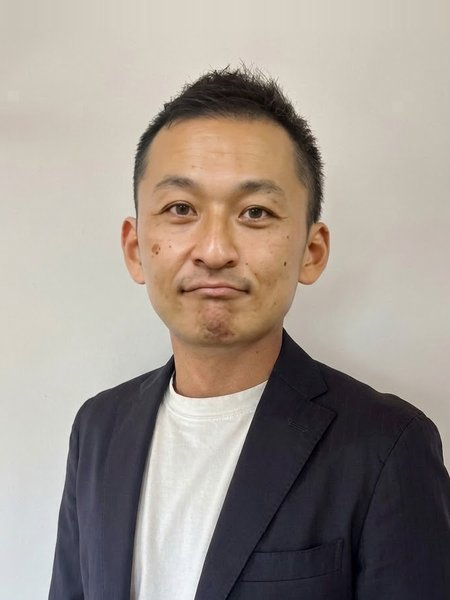

BNI 横浜セントラルリージョン 白樺チャプター
社長を現場から解放する仕掛け人
成相 裕康
（なりあい ひろやす）
自由診療の一人院長の、診療以外の時間を取り戻す仕事をしています。
診療の外の時間を、先生の手元へ
患者さんに合わせて診ていると、夜は気づけば遅くなる。記録や事務、情報発信といった診療の外の仕事を、仕組みに預けて時間を取り戻す方法があります。辻堂で自費の整体院を長く営む僕が、自分でやってきたやり方をお伝えします。
こんな院長へ
- 予約や問い合わせの電話を、ご家族やスタッフが受けている
- 診療が終わってから、説明資料やカウンセリングの記録、請求まわりの事務をしている
- ブログ・SNS・Googleビジネスプロフィールを「やらなきゃ」と思ったまま止まっている
- 患者さん一人ひとりに丁寧に向き合うほど、伝え方や集客に使える時間がなくなる
- 夜遅くまで診て、休みの日も連絡を返している
なぜ僕が
僕も自費の院を経営する、現役の院長です。辻堂で整骨院を開業し、保険診療から自費の美容整体院へ転換して、14年目の今も現役で施術に立っています。
単価35,000円・週休3日で、月商300万円を10年間一度も切っていません。パソコンが苦手と言われていた僕が、請求書・SNS・LINE・記録を仕組みに渡して、事務作業を月40時間減らし、夏に10連休を取れました（売上は保てました）。
治療院のクライアントでは、月商100万円以下から1年で300万円になった方が2件。一人でできることが増えて、外注費が年間100万円以上下がった例もあります。すべて、自分で試してから人に渡しています。
まず、時間の行き先を一緒に見ます
- 棚卸し：院長の1週間を一緒に書き出し、時間がどこに消えているかを見える形にします
- 仕分け：「やめていい仕事」「人に渡せる仕事」「院長にしかできない仕事」に分けます。「本当は何に時間を使いたいか」も、ここで言葉にします
そのうえで、AI導入という形でお渡しします
人に渡せる仕事を、AIの仕組みにして院長にお渡しします。院長は確認するだけの形です。設定はすべてこちらで行います。
例えば、こんな仕事を渡せます
- 問い合わせ・予約のLINEでの一次対応
- カウンセリング・説明の録音を文字起こしして、要点と次にやることをまとめる
- Googleビジネスプロフィール・SNSの原稿づくり（院長は確認するだけ）
- 請求書やメールの下書きなどの事務
まずは無料で1回
30分〜1時間、お話しさせてください（無料）。院長の1週間を伺って、どこの時間が削減できるかを一緒に見ます。何かを売り込むための時間ではありません。